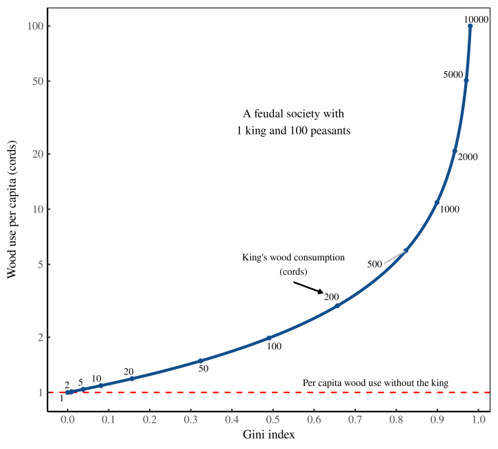

18 Degrowth
…a democratically planned yet adaptive, sustainable, and equitable downscaling of the economy, leading to a future where we can live better with less. This requires transforming the current profit-oriented capitalist system. It opposes blind faith in market forces and dismisses a pursuit of ‘green growth’ and decoupling as main strategies to solve environmental and social problems.
Growth has become uneconomic; its costs exceed its benefits.
If people didn’t have to work to pay the parasites who own the land they live on, the economy would produce less overall. That’s the degrowth hypothesis.
If communities had the sovereignty to prevent extracting and polluting industry they don’t want from setting up shop, the economy would produce less overall. That’s the degrowth hypothesis.
On-going research studies how to manage without growth by reducing the working week, changing money creation, reducing inequalities, or paying a universal income, perhaps funded by a carbon dividend. These are not easy policies. But prosperity without growth is the defining challenge for twenty-first century economics, and better ideas are welcome.
The idea of continuous growth is relatively recent, a product of the New Deal, when GDP was invented to help governments manage the economy. The Soviets first set annual growth targets in the 1950s, with the OECD following on and kick-starting an era of “growthmanship.” Growth is now like a secular god, a doxa whose truth cannot be questioned, left or right, east or west.
Basic material needs have been satisfied - we need something else not more of the same!
The idea is fundamentally different from a recession since degrowth is a planned reduction of energy and resource use. A recession, however, is an unplanned event that can exacerbate inequality and reduce wellbeing.
Why does it matter? In one word: climate. On our current trajectory climate change endangers roughly half of all plants and all insect species, as well as a quarter of vertebrate species, within the century.
The current economic system sacrifices both people and environments at a time when everything from shifting weather patterns to rising sea levels is global in scope and unprecedented in nature. We have a system that is not only not delivering social benefits, it is also accelerating planetary disasters,
18.3 Less Production - Better Distribution
If capitalism calls for scarcity in order to generate more growth, degrowth calls for the opposite: reversing artificial scarcities in order to remove growthist pressures, and indeed to render additional growth unnecessary. Expanding universal public services is key to this (i.e., the opposite of austerity). As for the problem of excess throughput: this is being driven by unnecessary industrial activity (in other words, industrial activity that is organized around exchange-value rather than use-value) and elite accumulation. So that’s what we have to degrow.
Of course, one can imagine this being achieved by an authoritarian government, but it wouldn’t work very well. The problem with any elitist state structure is that it is removed from the complex realities of regional ecology. You can’t manage ecosystems with abstract planning (James Scott’s work in Seeing Like a State is good on this); it requires the knowledge of people who have a relationship with the land… it requires commoners. We know that when people have collective democratic control over local ecological commons they make decisions to sustain rather than liquidate them. That’s the principle we need to build on.
Our relationship with nature will mimic the structure of our society. If we organize society around hierarchy, domination and extraction (which is true of both capitalism and any form of authoritarianism), then our relationship with nature will be hierarchical, dominating and extractive. But if we organize society around egalitarianism, reciprocity and care, then our relationship with nature will be egalitarian, reciprocal and caring. Every human society necessarily relies on nonhuman species; the question is, according to what principles do we incorporate them?
Degrowthism strikes a path that incorporates high-tech solutions to build low-tech, low-harm economies.
Under capitalism, innovations that deliver efficiency improvements lead not to a reduction of energy and resource use, but rather to more energy and resource use, because the gains are reinvested to expand the process of production and consumption. In other words, growthism wipes out our most impressive improvements. When it comes to confronting ecological breakdown, we must realize that it’s not our technology that’s the problem, it’s growth.
Action
The first step is to amplify the voices of Indigenous leaders and activists who are already pointing in this direction. The Red Nation movement’s tagline says “All Relatives Forever,” with relatives here of course referring to both human and nonhuman persons. Consider the implications of such a politics; it is profound – far more radical, and far more inspiring and enriching, than traditional leftist discourse.
The Rights of Nature movement is also promising; the more we talk about rivers, watersheds and ecosystems as persons, with rights to existence, the more this idea becomes thinkable. We don’t have to wait for national governments to create such rights; in many places local councils have this power.
Fiction
Ursula Le Guin’s The Dispossessed. It’s a story about a kind of ecosocialist society on another planet. The premise is that the ecosystem is primarily desert, so people have to find ways to sustain a flourishing society with relatively little material throughput. They do it with a firm commitment to egalitarianism, public goods, and direct democracy. They fiercely reject elite accumulation, which they see as dangerously wasteful. Because they do not measure civilization in terms of the quantity of stuff they consume (as our society does), they are free to focus on higher goals: philosophy, science and art. It’s worth noting that Le Guin was the daughter of Alfred Kroeber, an anthropologist who spent his career learning from Indigenous communities in the American Southwest. These were people who saw egalitarianism and direct democracy as essential to survival in a desert ecosystem. Le Guin was clearly inspired by their approach to the world.
There’s other literature that deals with degrowth themes, although without trying to portray a degrowth society. Michael Ende’s Momo comes to mind. There’s also Hayao Miyazaki’s films. Aldous Huxley’s Island. David Graeber’s Fragments of an Anarchist Anthropology explores ethnographic insights that are relevant to degrowth theory. Then there are the writings of anti-colonial leaders like Gandhi, Fanon and Sankara, who rejected growthism and sought to define a more human-centered economics. These are all resources we can draw on as we imagine a more just and ecological civilization.
Strategy
There’s a lot of work to be done when it comes to degrowth political strategy. I think what’s required is a range of approaches. There are people at the community level working to bring degrowth principles to local economic governance. Transition Towns in the UK are a nascent example of this. So too with cities like Amsterdam and Copenhagen adopting “doughnut economics.” We can see it at a national level, too, with New Zealand, Scotland and Iceland choosing to abandon GDP growth as a government objective. I think there’s hope at a multilateral level, too: the Environment Committee of the European Parliament just recently voted in favour of binding targets to reduce material throughput in absolute terms. That’s a core degrowth policy. Of course, it’s not law yet – but it’s a huge step.
The difference between neoliberal political strategy and degrowth is that the former had the backing of billionaires and corporations that bankrolled think tanks, university departments, and media outlets. It also had international financial institutions and the US military, which forcibly imposed the Washington Consensus around the world. Degrowth has to rely almost entirely on social movements. That’s a tall order, but we can take inspiration from our ancestors: the anti-slavery movement, the anti-apartheid movement, the anti-colonial movement, the Civil Rights Movement, the labour movement, the feminist movement… all of these have changed the world, against overwhelming odds. That’s the scale of what’s required of us.
18.4 What shouldn’t exist
The Waistfull Rich
In a world without billionaires, the ridiculous towers on Billionaire’s Row wouldn’t exist. And that means the stupendous amounts of energy required to build these towers could have been spent on something else … or not spent at all. In short, ridding the world of billionaires sounds like a great policy for reducing resource consumption (a.k.a. ‘degrowth’).
18.5 Radically Progressive Degrowth
Taxing Billionaires out of Existence
Achieving degrowth is a recipe for ‘immiseration’ only if we hold existing patterns of distribution constant. But if we redistribute resources (by eliminating the rich), those at the bottom need not suffer. This is ‘radically progressive degrowth.’
Inequality drives resource use

Figure: How inequality drives resource use. Wood use per capita in a hypothetical society consisting of 1 king and 100 peasants. The peasants each consume 1 cord of wood. The blue line shows what happens to per capita consumption (vertical axis) as the king ramps up his use of wood (labeled along the curve). The horizontal axis shows the resulting wood-use inequality, as measured by the Gini index.
Elites (here, the king) pulls up the average level of consumption from what it would be if the elites did not exist. From this principle comes a corollary that is equally simple yet far more provocative. One way to lower average resource use is to get rid of elites.
18.6 Assimilating Degrowth
Trantas
The sustainable development discourse, including the modern green growth version, may have aspects that contribute to environmental and social welfare but it is a top down reform project, that aims at correcting the environmental and social externalities resulting from economic growth. It is directed by governments that abide by the logic of capital. Although in principle there is civic engagement, public participation is limited and without challenging the dominant economic paradigm. Following Gramsci’s terminology, sustainable development can be interpreted as a passive revolution, in the sense that change is managed through compromises with different social and political actors but within limits which neutralize any potential threat to economic and political power. On the contrary, the emerging (yet still marginal) alternative, multi-disciplinary, degrowth academic paradigm, has evolved from an activist movement since the first decade of this century, and retains close contacts and open communication with social movements that support a degrowth transition in economy and society. This transition directly challenges the established orthodox growth narrative and the mechanisms of capital accumulation. Thus, in contrast to the sustainable development discourse, it is difficult for the “power bloc” to accommodate degrowth. But in times of crisis and change, the dominant powers can certainly use some aspects of the degrowth discourse, assimilating and transforming them into elements that fit their new accumulation strategies, hegemonic visions and state projects. For this not to happen, degrowthers should focus their research and theory more on the workings of capitalist political economy, and their political practice on trying to form alliances with social actors, such as working-class movements,that are crucial for the achievement of hegemony.
Passive Revolution (Gramsci)
Passive revolution then is about trying “to manage change and maintain control of economic and political power through compromises with different social interests and political forces within limits which neutralise anything which presents a serious threat”
In a passive revolution, the interests of the dominant forces are imposed on the popular masses “through a war of position which advances particular popular interests (if at all) through a mechanical game of compromise rather than their organic integration into a ‘national-popular’ project”
This differs from an expansive hegemony, as the latter requires the active support of the people to a hegemonic vision (and state project) 5 , on the basis of symbolic and material rewards that the popular masses receive in a national–popular program, which aims to advance not only the immediate “corporate” interests of the dominant group, but a very broad coalition of forces, ideally the whole nation.
This is a basic precondition for forming a “historical bloc,” which is about the “unity between structure and superstructure” and the formation of a homogeneous politico- economic alliance, without internal contradictions.
Topographically, therefore, passive revolution covers the space of the “war of position” between an expansive hegemony and an open “war of maneuver” (or “war of movement”) against the popular masses, and it includes not only normal reformist forms of social control but also goes all the way to the use of “force, fraud, and corruption,” where it borders with the war of maneuver. Gramsci viewed the 1930s reorganization of capitalism, involving the increased state intervention in the economy and society that took a variety of political forms, such as the New Deal in USA and Fascism in Italy, as cases of passive revolution.
‘Sustainable Development’ as Passive Revolution
Sustainable development, as expressed at the international level in the current 2030 Agenda of the Sustainable Development Goals (SDGs) (UN General Assembly Resolution 2015), and in other regional and national contexts, can be interpreted, mutatis mutandis, as a passive revolution case, in the sense that the dominant social classes and groups are pursuing their hegemonic visions, state projects and accumulation strategies by assimilating certain demands from the subaltern and opposing social and political forces and transforming their radical potential into politically harmless elements.
They succeed in ‘decapitating’ the revolutionary/emancipatory potential of their adversary (the emerging “collective will”) and secure their own dominance or, even better, hegemony.
The “laws of motion” of capitalism set some very definite limits on the applicability of policy proposals made by the degrowth school of thought
As Régulation theory (Boyer and Saillard 2002) has shown, there is a variety of accumulation regimes and modes of regulation that can secure for a certain historical period the reproduction of capitalist social formations.
Nothing precludes the possibility for the dominant powers to adopt some degrowth measures in a passive revolution manner, by transforming them not only into harmless elements in their hegemonic visions but also beneficial features of their immediate economic interests in new concrete state projects.
The Problem with Sustainability
And it all pretty much comes down to Brundtland’s foreword to the 1987 Our Common Future report: “These links between poverty, inequality and environmental degradation formed a major theme in our analysis and recommendations. What is needed now is a new era of economic growth – growth that is forceful and at the same time socially and environmentally sustainable” (WCED 1987). Well, as the degrowth, postgrowth or ‘steady-state economy’ schools of thought would argue, this is the problem with sustainable development; the primacy of economic growth considerations and the positivist/modernist belief that in the three-circle intersection of economic growth, with environmental protection and social justice, “win-win” policies can be implemented.
Sustainable development has been called an “oxymoron,” an attempt to square the circle, to have one’s cake and eat it too, for “how can we protect nature while keeping on competing and growing economically?”
The dominance of growth-oriented policies and their contradictory position to sustainability priorities, and also comment on the vagueness and ambiguity of the term.
The concept is heavily contested by different and opposing “stakeholders,” who try to appropriate it and give it a meaning according to their own interests. Some talk about the “highjacking” of sustainability
As the UN documents on sustainable development fail to identify the historical and structural roots of environmental and social degradation, the proposed solutions cannot be transformative enough.
Of particular importance to the passive revolution aspects that are discussed herewith, is the framing of the mainstream sustainable development discourse in a way that can be described as a “post-political” depoliticization of a political issue par excellence.
The environmental movement may be “the most comprehensive and influential movement of our time” representing for the ‘post-industrial’ age what the workers’ movement was for the industrial period.
Although it is to a large extent recognized that economic growth does not by itself eliminate poverty nor does it improve the environment, the question remains why then is economic growth – at least in the Global North – still a goal of sustainable development?
Obviously, to stop prioritizing growth and to start focusing seriously on reducing inequalities on the economic and ecological front, within and among countries, through redistributive policies, while downscaling the biophysical size of the economy, could have dire consequences to the process of capital accumulation and the capitalist economy as a whole.
So, an alternative, passive revolution path, along the lines of a green social-democratic discourse of difference, is to reverse the question and ask if the implementation of social and environmental policies that aim to eliminate poverty and inequalities, protect the environment and tackle climate change, could in return lead to economic growth, albeit this time more inclusive and sustainable.
The initial radicalism of the environmentalist movement of the 1970s has vanished and as the UN documents on sustainable development fail to identify the historical and structural roots of environmental and social degradation, the proposed solutions cannot be transformative enough.
The discourse and project of sustainable development gradually lost its way, it is now refolded into the much more market-oriented green growth discourse and project, that deviates considerably from the original sustainability concerns, as it asserts that environmental sustainability is not only compatible but also depends on the market system.
The question of decoupling economic growth measured in GDP, from growth in environmental impacts strikes at the heart of the matter and constitutes the ultimate testing field for the theoretical assumptions and empirical evidence of those who promote the growth solution to all problems. If decoupling via scientific and technological advancements and “natural capital” substitution by “human-made capital” were feasible, then growth would be a legitimate sustainability goal. If not, other ways for decoupling should urgently be found if climate change and pressing environmental (and societal) problems are to be taken seriously. Based on the second law of thermodynamics but also the findings of authoritative scientific studies on historical trends and model-based projections for the future, the answer to the decoupling question appears to be negative.
Radical Degrowth
The sustainable development discourse may have many aspects that contribute to environmental and social welfare but it is basically a top-down reform project that aims at correcting the environmental and social externalities to economic growth. It is run by governments that abide by the logic of capital 12 and although in principle it promotes civic and stakeholder engagement, public participation is limited and is done in a way that does not seriously challenge the dominant economic paradigm.
The emerging (yet still marginal) alternative, multi-disciplinary, degrowth academic paradigm has evolved, in a consistent and quite influential way since the first decade of this century, from an activist movement and it retains close contacts and open communication with social movements that support a degrowth transition in economy and society. An explicit goal of degrowth is the repoliticization of environmentalism and ending of the depoliticizing consensus on sustainable development.
Degrowth challenges the very foundations of “actually existing” capitalism and erstwhile socialism alike, as it postulates that infinite economic growth in a finite planet is just impossible and must be undesirable.
Capitalism is not sustainable in the long run without the dynamics of capital accumulation and economic growth (periods of economic crisis, which are accompanied by crises in political and ideological fields, are a proof of that), then degrowth has a strong anti-capitalist/anti-consumerist orientation.
Degrowth has been defined as
a voluntary, democratically negotiated, equitable downscaling of economic production and consumption to assure that society’s throughput – resource use and waste – stays within safe ecosystem boundaries
Futility Limit
As Daly (2007: 17) argues, the rich countries of the planet have reached a stage of “non-economic growth” (increases in production come at the cost of resource depletion and well-being that is worth more than the commodities made) and the population is facing a “futility limit.”
Any utility (level of satisfaction of the populations’ needs and wants) earned from increased production and consumption is surpassed by the disutility of the level of sacrifice that has to be endured (workload, loss of leisure, resource depletion, exposure to pollution, congestion)
Daly’s argument is that as we move from the traditional “empty world” to today’s “full world” economy, we must adjust the economics accordingly.
We can no longer afford to treat the environmental issues as “externalities.” We must start economizing on and invest in the limiting factor (natural capital).
Adhere to the tenets of Buddhist economics and the “small is beautiful” slogan or the low-impact “spaceship economy” in contradistinction to the voracious “cowboy economy”
Supportive of alternative constructions of economy and society, such as producer-consumer cooperatives, eco-communities, local currencies and social philosophies of Buen Vivir and Ubuntu, and promote concrete welfare reform policies such as work-sharing and the reduction of working hours, job guarantee schemes, introduction of income guarantee, basic and maximum income/wealth, and a shifting from a corporate to a cooperative economy.
If escaping the issue of just redistribution via the growth imaginary is no longer possible, then a more genuine political settlement of social questions becomes imminent.
Quantitative growth is an inherent characteristic of the capitalist reproduction process and, since growth, by default, puts enormous pressure on nature, capitalism is not at the end of the day ecologically sustainable.
Proponents of SSE, such as Daly and Lawn , believe that a steady- state economy is compatible with capitalism (a system based on private property and markets), albeit regulated by a strongly interventionist social-democratic state. After all, as Lawn (2011) rightly points out, the real deal in capitalism is to make a profit, not to grow the company. If you don’t make a profit you die and even though profit is made by increasing output and sales (the first option), the profitability can also be accomplished by producing better quality products and selling the same quantity of output at a higher price (a second option) or by producing the same quantity more efficiently (the third option). It is thus possible to have a steady-state capitalist economy, with profits but not necessarily with an increased throughput (growth).
Blauwhof (2012) discusses these issues thoroughly. He notes that although Lawn’s first option obviously leads to growth in both throughput and GDP, the third option does not. In fact, it can lead to a decreased demand, unsold products and a lower GDP. However, this option has limits, as wages, working hours per product and other input costs cannot be squeezed forever and also, at some point, the competition will catch up with the efficiency improvements. Regarding the second option, this could lead to GDP growth but not throughput growth, as increased revenues can be earned by using the same amount of inputs. Nevertheless, the relation of higher prices with constant wages (with which the goods will be bought) can lead to a series of problems associated with a lack of demand. In other words, although in principle the profit motive is not identical to the growth imperative, a zero-growth economy does not make much sense to the profit-maximizing players of a competitive economy.
By using Marxian economic analysis of capital accumulation (Blauwhof 2012), 15 including aspects of Marxist theory such as the tendency of the rate of profit to fall over time (Li 2007), it becomes evident that a zero-growth society cannot be compatible with an economic system based on the pursuit of profit and accumulation. Even more important is to look at the geography of the spatial expansion of capital to overcome the limits of capital accumulation, as “capitalism could not survive without being geographically expansionary and perpetually seeking out ‘spatial fixes’ for its problems.”
For Marxist eco-socialists, a fundamental contradiction exists between capital accumulation and planetary boundaries. Capital as a process (or social relation) of self-expanding value, bound by the laws of capitalist competition, runs the risk of annihilating itself, and the whole planet. Accordingly, the SSE institutional and policy reforms proposed by Daly (2013) and other ecological economists and degrowthers (Kallis 2011, 2015; Kallis et al. 2012), are well-intentioned and ethical but not really compatible with the workings of a capitalist economy.
From a system based on private property of the means of production and the commodification of all aspects of social life and nature, to one based on a collective ownership by freely associated individuals and a restoration of the commons.
1. Put life at the center of our economic systems,
2. Radically re-evaluate how much and what work is necessary for a good life for all,
3. Organize society around the provision of essential goods and services,
4. Democratize society, and
5. Base political and economic systems on the principle of solidarity. These principles, as further specified in the letter and the degrowth literature in general, certainly aim at a more egalitarian and sustainable society and they do pose obstacles to the normal circuits of capital accumulation. But as long as their critical approach to the general concept of “growth society” is not combined with a class analysis and critique of capitalism (Foster 2011), degrowth’s arguments can be picked up in an ad hoc manner and transformed by “bourgeois forces” so that they don’t become detrimental to the basic mode of operation of capitalist social formations.
Degrowth is obliged to offer viable solutions to the job losses and declining living standards of working people and the poor (Pollin 2018: 22). This can be done only when it takes seriously the class and class-relevant dimension of the economic and ecological crisis,
The degrowth school tends to avoid the central social question of capitalism and prefers to draw attention to alternative paths of economic and social organization, such as the social and solidarity economy, and sustainable community movement organizations. It places emphasis on creative, bottom-up initiatives and horizontal networks of collectivities that are blossoming rhizomatically. It supports a co-evolution of social, cultural and ecological systems.
These are all welcome features of another way of doing things now but they are not enough, since any good examples of an alternative economy work only on the fringes of the dominant capitalist mode of production.
In societies based on class antagonisms and unequal distribution of power, any scientific evidence and logically valid arguments offered by the degrowth movement and its supporters, are a necessary but not sufficient condition for social change.
A collective identity that is willing to initiate change is needed. This is constructed through the mechanisms of hegemony, that is by articulating a plurality of seemingly autonomous and unconnected interests and demands into a coherent hegemonic vision that is collectively forged through discourse and aims at spreading its influence into society and “capturing”/altering the state, in order to bring forth social change.
More radical policy proposals that aim at drastic income and wealth redistribution reforms, in parallel with the promotion of producer cooperatives, as an alternative democratic form of organization of the economy, would require the formation of a well-built alliance between environmental and working-class movements.
A Gramscian theory of the state suits degrowth’s work on the combination of grassroots and institutional actions.
Other theorists don’t agree that real change can ever occur through the state, but at the same time acknowledge that changing the world without taking power is very difficult.
Intervene and try to introduce as many degrowth aspects as possible into official policy contexts.
An immense task indeed.